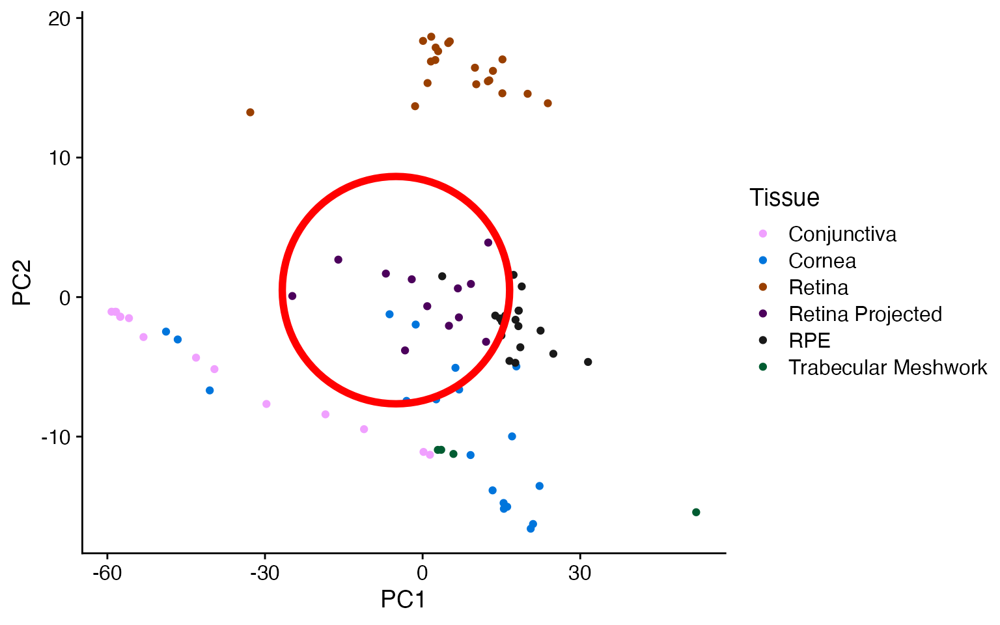
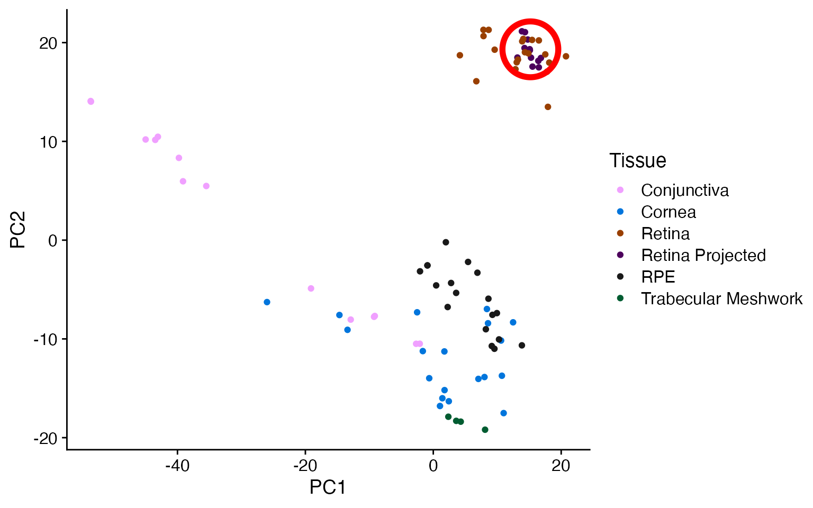

Metadata Label Transfer on Real Data
real_data_testing.RmdIntroduction
Here we take data from the EiaD resource, which has been cut down to a few dozen cornea, retina, and RPE samples as well as the first few thousand most variable genes (as calculated by variance).
Import EiaD data
An ocular subset of the full resource (full data can be found at eyeIntegration.nei.nih.gov)
feature_by_sample <- data.table::fread(
system.file('test_data/EiaD__eye_samples_counts.csv.gz', package = 'metamoRph')
)
genes <- feature_by_sample$Gene
feature_by_sample <- feature_by_sample[,-1] %>% as.matrix()
row.names(feature_by_sample) <- genes
meta_ref <- data.table::fread(
system.file('test_data/EiaD__eye_samples_metaRef.csv.gz', package = 'metamoRph')
)
meta_project <- data.table::fread(
system.file('test_data/EiaD__eye_samples_metaProject.csv.gz', package = 'metamoRph')
)projectR
As projectR does not apply the prcomp row (gene) scaling, the new data ends up in the center of the PCA plot. Scaling on the new data alone also results in the variation between the samples being exaggerated.
ref_matrix <- feature_by_sample[,meta_ref %>% pull(sample_accession)]
Pvars <- matrixStats::rowVars(log1p(ref_matrix))
select <- order(Pvars, decreasing = TRUE)[seq_len(min(1000,
length(Pvars)))]
pr_run <- prcomp(log1p(t(ref_matrix[select,])),
scale = TRUE,
center = TRUE)
new_mat_for_projection <- feature_by_sample[select,
meta_project %>% pull(sample_accession)]
pr_proj <- projectR(data = log1p(as.matrix(new_mat_for_projection)),
loadings = pr_run,
dataNames = row.names(new_mat_for_projection))
#> [1] "1000 row names matched between data and loadings"
#> [1] "Updated dimension of data: 1000 12"
data_plot <- bind_rows(cbind(t(pr_proj), meta_project %>%
mutate(Tissue = paste0(Tissue, " Projected"), Data = 'Projection')),
cbind(pr_run$x, meta_ref))
data_plot %>%
mutate(Tissue = case_when(Cohort == 'Body' ~ 'Body', TRUE ~ Tissue)) %>%
ggplot(aes(x=PC1,y=PC2, color = Tissue)) + geom_point() +
ggforce::geom_mark_circle(data = data_plot %>% filter(Data == 'Projection'), color = 'red', expand = unit(2,"mm"), size = 2) +
scale_color_manual(values = pals::alphabet(n=12)%>% unname()) + cowplot::theme_cowplot()
metamoRph
metamoRph’s two steps (run_pca and
metamoRph) gets the new data into the proper scale for the
projection to work properly.
pca_output <- run_pca(feature_by_sample = ref_matrix[select,],
meta = meta_ref,
hvg_selection = 'classic',
sample_cpm_scale = FALSE)
# project data from the pca
rownames(new_mat_for_projection) <- gsub(' \\(.*','',rownames(new_mat_for_projection))
projected_data <- metamoRph(new_mat_for_projection,
pca_output$PCA$rotation,
center_scale = pca_output$center_scale,
sample_cpm_scale = FALSE)
data_plot <- bind_rows(cbind(projected_data, meta_project %>%
mutate(Tissue = paste0(Tissue, " Projected"),
Data = 'Projection')),
cbind(pca_output$PCA$x, meta_ref) %>%
mutate(Data = 'Original'))
data_plot %>%
mutate(Tissue = case_when(Cohort == 'Body' ~ 'Body', TRUE ~ Tissue)) %>%
ggplot(aes(x=PC1,y=PC2,color = Tissue)) +
geom_point() +
scale_color_manual(values = pals::alphabet(n=12) %>% unname()) +
ggforce::geom_mark_ellipse(data = data_plot %>% filter(Data == 'Projection'), color = 'red', size = 2) +
ggforce::geom_mark_ellipse() +
cowplot::theme_cowplot()
metamoRph with cpm scaling and scran HVG selection
The CPM and scran steps modestly improves the PC1/PC2 distinction between the tissue types as well as pulling some outliers back towards their matching tissue type.
pca_output <- run_pca(ref_matrix[select,],
meta_ref,
hvg_selection = 'scran',
sample_cpm_scale = TRUE)
# project data from the pca
projected_data <- metamoRph(new_mat_for_projection,
pca_output$PCA$rotation,
center_scale = pca_output$center_scale,
sample_cpm_scale = TRUE)
data_plot <- bind_rows(cbind(projected_data, meta_project %>%
mutate(Tissue = paste0(Tissue, " Projected"),
Data = 'Projection')),
cbind(pca_output$PCA$x, meta_ref) %>%
mutate(Data = 'Original'))
data_plot %>%
mutate(Tissue = case_when(Cohort == 'Body' ~ 'Body', TRUE ~ Tissue)) %>%
ggplot(aes(x=PC1,y=PC2,color = Tissue)) +
geom_point() +
scale_color_manual(values = pals::alphabet(n=12) %>% unname()) +
ggforce::geom_mark_ellipse(data = data_plot %>% filter(Data == 'Projection'), color = 'red', size = 2) +
ggforce::geom_mark_ellipse() +
cowplot::theme_cowplot()
Label Transfer
Finally we demonstrate the two step process for transferring over the labels from the input data onto the projected data.
First we run model_build on the original
pca_output eigenvalue matrix ($x). You also
have to provide the label data of interest to transfer
(tissue). Behind the scenes a lm model is
built for each unique label (in this case tissue) against
all of the other tissues using the first 10 PCs. The output is a list of
models (one for each tissue type).
We can then use this list of models in model_apply as
well as the projected data from metamoRph. We provide (this
is optional) the true labels of the projected data. A tibble is returned
which gives the original label (if provided) in the
sample_label field as well as the predicted label (the
predict) field. The max_score is the
confidence that the model has in the prediction. Closer to 0 is low
confidence while closer to 1 is high confidence.
trained_model <- model_build(pca_output$PCA$x,
pca_output$meta$Tissue,
model = 'lm', num_PCs = 10, verbose = FALSE,
BPPARAM = MulticoreParam(10))
label_guesses <- model_apply(trained_model,
projected_data,
meta_project$Tissue
)
label_guesses
#> # A tibble: 12 × 6
#> sample_id sample_label predict predict_second predict_stringent max_score
#> <chr> <chr> <chr> <chr> <chr> <dbl>
#> 1 SRS8476047 Retina Retina Conjunctiva Retina 0.980
#> 2 SRS8476048 Retina Retina Conjunctiva Retina 1.06
#> 3 SRS8476049 Retina Retina Conjunctiva Retina 1.05
#> 4 SRS8476039 Retina Retina Conjunctiva Retina 1.00
#> 5 SRS8476038 Retina Retina Trabecular Meshw… Retina 1.03
#> 6 SRS8476040 Retina Retina Trabecular Meshw… Retina 1.00
#> 7 SRS8476041 Retina Retina Trabecular Meshw… Retina 1.03
#> 8 SRS8476042 Retina Retina Conjunctiva Retina 0.986
#> 9 SRS8476043 Retina Retina Trabecular Meshw… Retina 1.03
#> 10 SRS8476044 Retina Retina Trabecular Meshw… Retina 0.979
#> 11 SRS8476045 Retina Retina Trabecular Meshw… Retina 1.03
#> 12 SRS8476046 Retina Retina Conjunctiva Retina 1.06